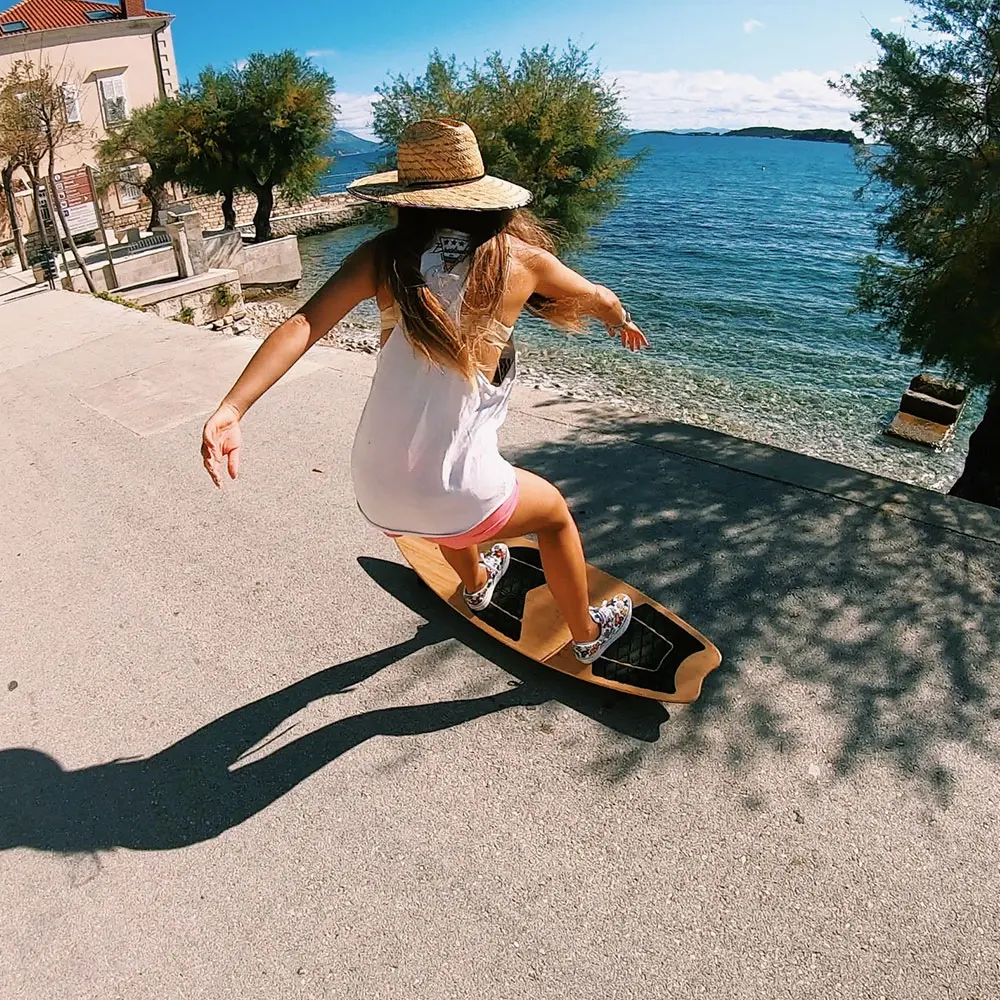
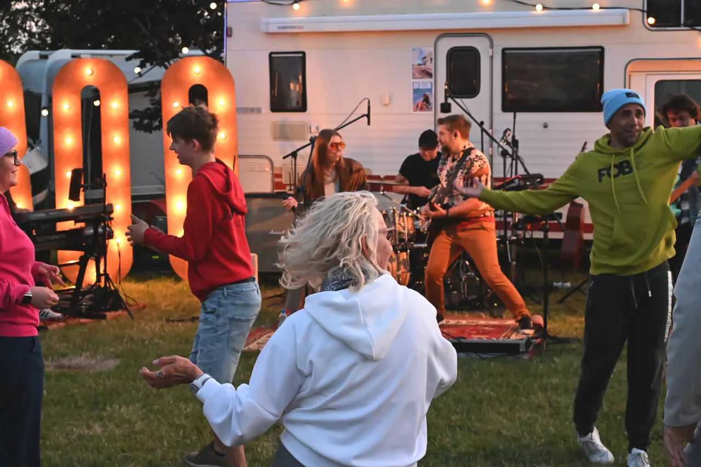
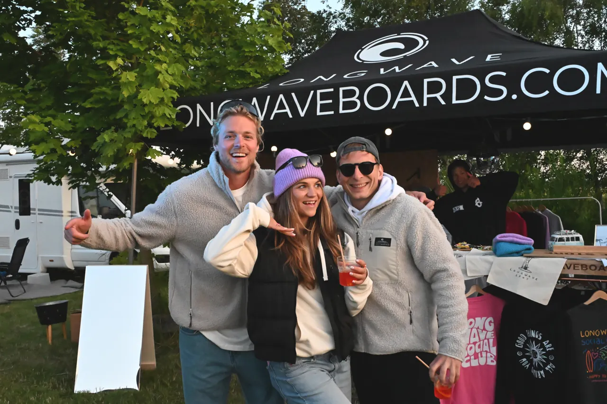

PASJA
Wszystko zaczęło się od wspólnej zajawki.

Od garażu do świata LONGWAVE!
Hej, tu Zuzia i Tomek. Prywatnie para, a od lat również partnerzy w biznesie. Razem tworzymy LONGWAVE markę, która z małych pomysłów, ogromnej pasji i wielu godzin pracy zmieniła się w coś, o czym kiedyś mogliśmy tylko marzyć.
Zaczynaliśmy od bambusowych desek i warsztatów. Dzisiaj organizujemy obozy, wyjazdy zagraniczne, eventy, tworzymy własne projekty i miejsca, w których możemy spotykać się z Wami.
A w tym wszystkim najlepsze jest to, że tę historię tworzymy razem z Wami!
Wszystko zaczęło się od wspólnej zajawki.
To dla Was i razem z Wami rozwijamy LONGWAVE.
Dbamy o atmosferę i każdy, nawet najmniejszy szczegół.
Sport, natura, podróże i sposób, w jaki lubimy żyć.
Od garażowej firmy i tworzenia pierwszych produktów po własne biuro podróży.
Od produkcji unikatowych bambusowych desek po autorski truck.
Od prowadzenia warsztatów po organizację obozów, wyjazdów tematycznych i eventów.
Od partnerów życiowych po biznesowych.
Kiedy połączyliśmy siły, zaczęliśmy realizować kolejne pomysły. Jeden projekt prowadził do następnego, a nasze plany rosły razem z LONGWAVE.
Nie chodziło nam tylko o tworzenie produktów czy organizowanie wyjazdów. Chcieliśmy budować coś, co będzie odzwierciedlało nasz sposób życia -pełen sportu, pasji, kreatywności, podróży i ludzi z podobną energią.
Dzisiaj LONGWAVE to wiele różnych projektów, ale każdy z nich ma ten sam wspólny mianownik.
Robimy to, co kochamy. I uwielbiamy dzielić się tym z innymi!

Nie jesteśmy osobami, które tylko wymyślają projekt i obserwują jego realizację z daleka.
Jesteśmy w tym wszystkim całym sercem.
Rozmawiamy z Wami przez telefon, odpowiadamy na wiadomości, tworzymy treści, planujemy kolekcje, projektujemy nowe rzeczy, ustalamy programy i dopracowujemy kolejne pomysły.
A później jesteśmy fizycznie na naszych obozach i eventach.
Od pierwszej koncepcji, przez projektowanie i organizację, aż po ostatnie lampki zawieszone na miejscu.
Uwielbiamy ten czas tuż przed wyjazdem! Kiedy dużo się dzieje, przygotowania trwają na wielu płaszczyznach jednocześnie, pracujemy na pełnych obrotach i nakręcamy się na to, co za chwilę razem przeżyjemy.
Bo doskonale wiemy, że w tych małych szczegółach ukryty jest cały klimat LONGWAVE.

Kadry LONGWAVE


Oboje mamy ogromne doświadczenie w pracy z dziećmi i młodzieżą, ale jest jeszcze malutki detal, ale chyba dosyć istotny.
Sami jako dzieci uwielbialiśmy jeździć na obozy!
Pamiętamy wszystko, emocje, nowe znajomości, pierwsze samodzielne wyjazdy i ekscytację, kiedy zaczynało się coś nowego.
Dzisiaj możemy spojrzeć na nasze obozy również z perspektywy uczestnika i stworzyć przestrzeń, którą sami chcielibyśmy mieć wiele lat temu.
Tak rozwijamy nasz autorski program LONGWAVE CAMP - łączący sport, naukę, kreatywność, rozwój i zabawę.
Stawiamy na kameralne grupy, indywidualne podejście i różnorodne aktywności. Chcemy inspirować, pokazywać nowe możliwości, rozwijać zainteresowania i zachęcać do próbowania rzeczy, których wcześniej może brakowało odwagi spróbować.
Najbardziej zależy nam jednak na tym, żeby każdy uczestnik czuł się komfortowo, swobodnie i mógł wynieść z wyjazdu jak najwięcej.
Najwięcej satysfakcji daje nam to, co dzieje się z ludźmi podczas naszych wyjazdów.
Obserwujemy, jak uczestnicy przełamują swoje bariery, zdobywają nowe umiejętności, nabierają pewności siebie i nawiązują przyjaźnie.
Widzimy, jak z grupy osób, które wcześniej się nie znały, powstaje naprawdę zgrana ekipa.
A później dostajemy od Was wiadomości, zdjęcia i podziękowania.
I to jest właśnie wisienka na torcie!
Mamy poczucie, jakbyśmy dokładali swoje małe cegiełki do życia wielu młodych zajawkowiczów. I nie ukrywamy - jest to dla nas baaaardzo wartościowe.
LONGWAVE traktujemy trochę jak naszą misję.
Chcemy pokazywać, ile radości może dawać aktywny styl życia, wspierać rozwój i tworzyć przestrzeń, w której ludzie dobrze się ze sobą czują.
Z roku na rok pojawiają się nowe pomysły, miejsca, wyjazdy i projekty.
Rozwijamy LONGWAVE CAMP, tworzymy kolejne wydarzenia, rozbudowujemy nasze bazy i szukamy nowych możliwości.
Ale jest coś, czego nie chcemy zmieniać.
Bliskości z Wami, autentyczności i tej rodzinnej atmosfery, która towarzyszy nam od początku.
Dziękujemy za Waszą obecność, otwartość i zaufanie.
Za każdy wspólny wyjazd, rozmowę, wiadomość i kolejną okazję, żeby zrobić razem coś fajnego.
Ściskamy! Zuzia i Tomek

Porozmawiajmy o Twoim wyjeździe
Opowiedz nam, co planujesz. Pomożemy dobrać wyjazd, termin lub program dla Twojej grupy.